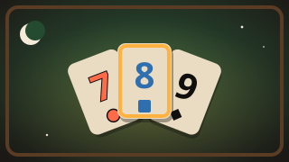
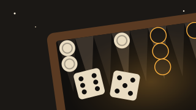
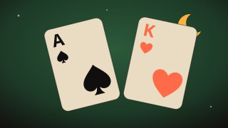

Dama
Kaldığın yerden devam ediyorsun
Nasıl oynanır?
Dama, Türkiye'nin kahvehane ve kıraathanelerde en çok oynanan masa oyunudur. Sekize sekiz tahtada herkesin on altı taşı vardır; taşlar ikinci ve üçüncü sıraya dizilir ve tüm kareler kullanılır. Açık taşlar yukarı doğru ilerler ve oyunu sen açarsın; koyu taşlar aşağı iner. Bir taş yalnızca ileri ya da yana birer kare gider; geriye ve çapraza gitmez.
Yemek zorunludur. Yanındaki rakip taşın hemen ardı boşsa onun üstünden atlayarak yersin; bunu ileri ve yana yapabilirsin. Aynı hamlede peş peşe yiyebilirsin, yenen taş hemen tahtadan kalkar. Birden çok yeme yolu varsa en çok taşı yediren yol seçilmek zorundadır; tahtada yeme gücü olan taşlar köşelerindeki “!” işaretiyle gösterilir. Çok duraklı yolda her durağa sırayla dokun; durak numaraları nokta üstünde görünür. Son hedefe doğrudan dokunmak ya da taşı sürükleyip bırakmak da olur.
Bir taş karşı tarafın son sırasına ulaşınca dama olur ve üstünde sodyum bir taç belirir. Dama dört yöne istediği kadar uzağa gider, uzaktan yer ve atladığı taşın ardındaki boş karelerden dilediğine iner; yeme sırasında yön değiştirebilir ama geri dönemez. Rakibin hiç taşı ya da oynayacak hamlesi kalmazsa kazanırsın. Yeme ve taş hamlesi olmadan kırk hamle geçerse, aynı konum üçüncü kez oluşursa ya da tahtada yalnızca birer dama kalırsa oyun berabere biter.
Bilgisayara karşı üç seviye var: Kolay ara sıra hata yapar, Orta kısa hesap yapar, Zor derin arar ve bir hamlesi iki saniyeyi geçmez. Geri al son hamleni ve bilgisayarın cevabını geri alır, İpucu oynayabileceğin iyi bir taşı gösterir. Günün Bulmacası her gün herkese aynıdır: verilen konumda iki hamlede rakibi taşsız ya da hamlesiz bırakmanı ister; serin üst üste çözdüğün gün sayısıdır. Yarım kalan oyunun ve istatistiklerin yalnızca bu cihazda saklanır; oyun internetsiz de çalışır.
Benzer oyunlar
-

Masa oyunuOkey
Üç bilgisayar rakibe karşı klasik okey: gösterge, sahte okey, per ve seri kurma, çifte gitme. Üç zorluk, 3 ya da 5 elli maç ve her gün aynı dağıtımlı günün eli.
-

Masa oyunuTavla
Bilgisayara karşı Türk usulü tavla: kapı, kırık, zorunlu hamle, toplama ve mars. Üç zorluk, 3 ya da 5 puanlık maç.
-

Masa oyunuPasyans
Klondike pasyans: 1 ya da 3 kart çekiliş, sürükle-bırak ve dokunarak taşıma, geri al, ipucu. Çözücüyle kazanılabilir doğrulanmış günün destesi ve istatistikler.